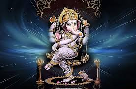

Ganesh Chaturthi



"Ganesh Chaturthi, also known as Vinayaka Chaturthi, is a Hindu festival celebrating the arrival of Ganesha to earth from Kailash Parvat with his mother Goddess Parvati/Gauri. The festival is marked with the installation of Ganesha clay idols privately in homes, or publicly on elaborate pandals"
Ganesha Chaturthi starts with Vedic hymns, prayers, vrata and hindu texts such as Ganesha Upanishad. Offerings of prasada after the prayer and distributing amongst the community people, prasad include sweets, modaka ( it is believed to be the favourite sweet of ganesha). This festival starts on the fourth day of Hindu luni-solar calendar month Bhadrapada, which normally falls in the month of August or September. The Ganesha chaturthi ends on the tenth day
Celebrations include four rituals.
The first one is Pranapratistha. It involves the positioning of the idol or deity of Lord Ganesha into the pandals. This calls for a big celebration. People pray and sing various folk songs while bringing the deity to the Pandals. They play with colours as well.
The second stage is Shodasopachara. It involves praying to the lord and offering him puja.
The third stage is Uttarpuja. It involves a ceremony after which the deity can be moved from his position. After this ritual, the idol is moved among the public so that they can take his blessings.
The last stage is Ganpati Visarjan. At this stage, the idol is immersed into the river, sea or ocean. He is believed to go back to Lord Shiva and Goddess Parvati after the immersion.